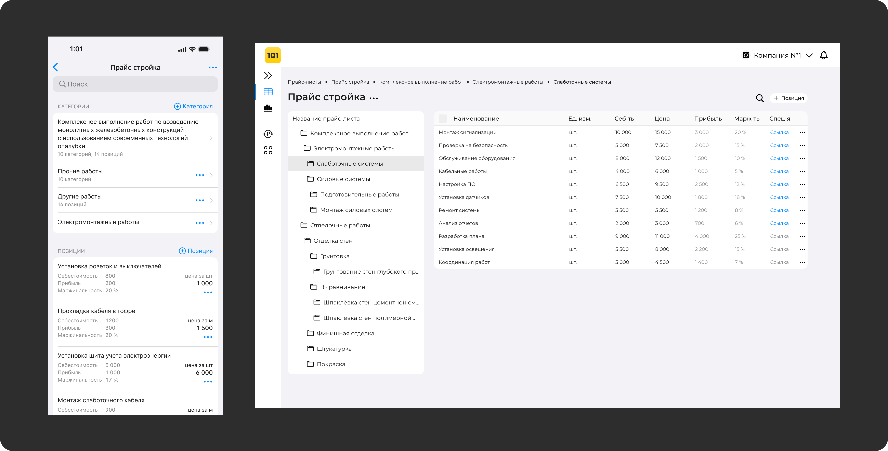
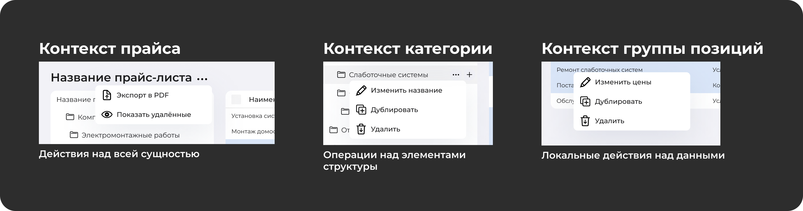
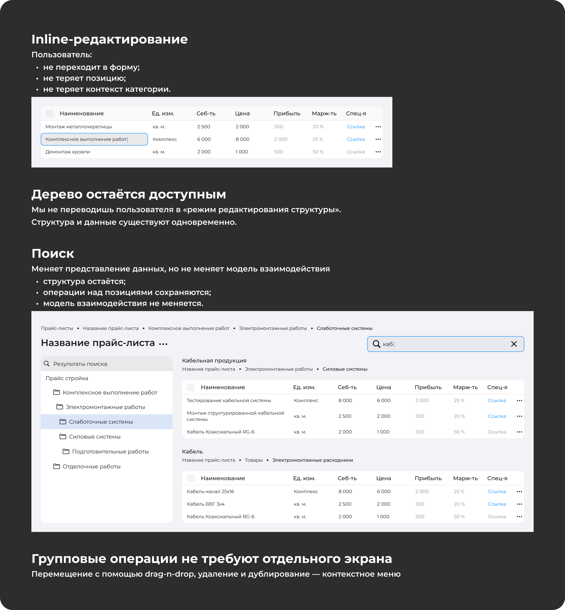
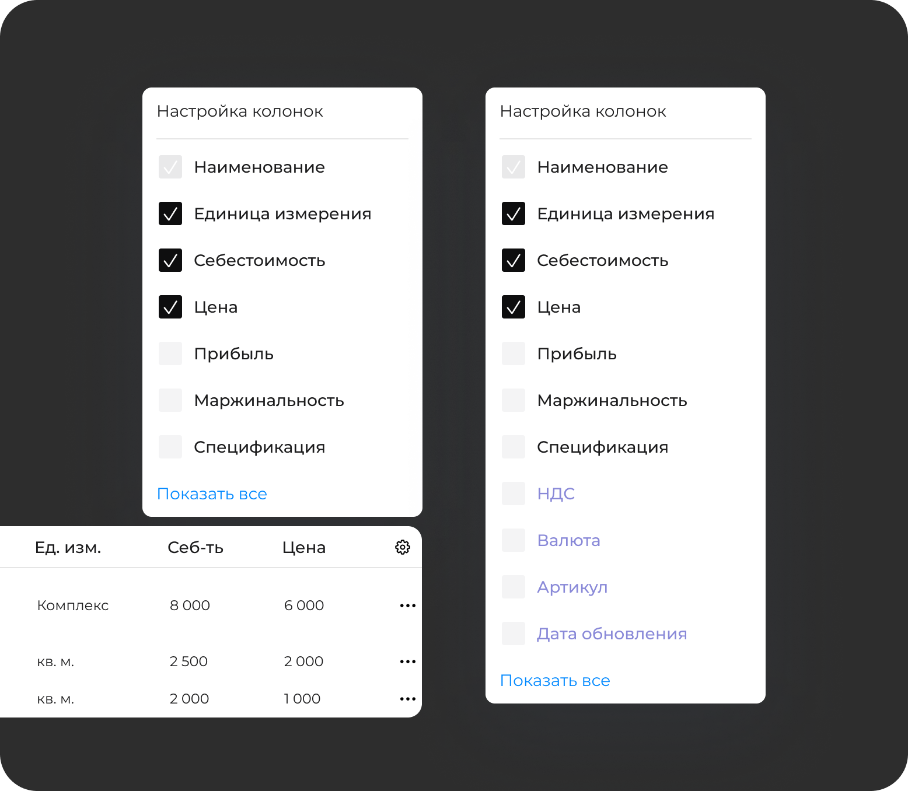
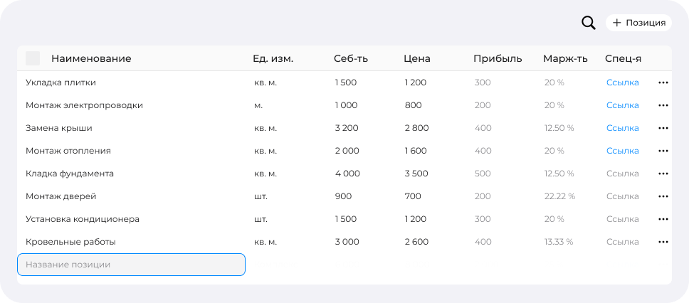

Контекст
Product Owner выдвинул гипотезу: часть потенциальной аудитории не готова работать с большими массивами данных с телефона. Для руководителей и подрядчиков прайс-листы - это таблицы с десятками и сотнями позиций.

Архитектура рабочего пространства
Я не переносил мобильные экраны на большой дисплей. Вместо этого сформировал десктопную модель с разделением уровней: контекст прайса, дерево категорий, операционная таблица и локальные действия через контекстные меню.
- Табличный режим даёт высокую плотность информации и сравнение строк.
- Массовые действия и inline-редактирование сокращают лишние переходы.
- Иерархия категорий остаётся видимой, пользователь не теряет рабочий контекст.
- Новые режимы и поля добавляются без пересборки модели взаимодействия.



Функциональный прототип
Чтобы проверить, работает ли набор паттернов как единая система, я за два дня собрал интерактивный прототип. В нём были реализованы редактирование таблицы, поиск, множественное выделение, drag-and-drop и массовое изменение значений.
Прототип помог сфокусировать обсуждение с Product Owner и разработчиком на UX-решениях, реализуемости и приоритетах, а не на статичных макетах.
Результат
Пользователи начали переносить основной объём работы в веб-версию, а количество запросов на экспорт данных для внешней обработки сократилось. Раздел стал восприниматься как полноценная альтернатива Excel.
